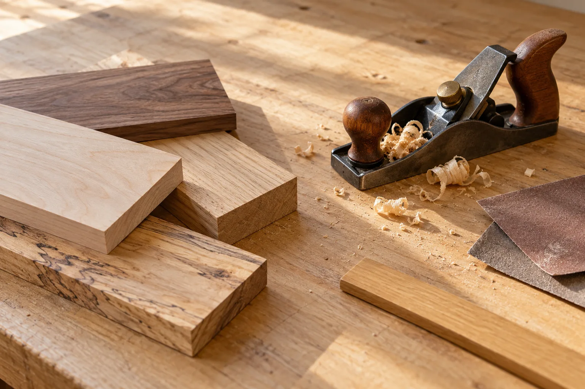

初めから漆を使う
接着剤を用いず、初めから漆で直す繕い教室です。器の状態により対応が異なるため、修理できる範囲や進め方は公式の教室案内でご確認ください。

非公式デザイン見本保存された公式掲載情報をもとにした参考案内です。最新の料金・受付状況・実施条件は公式でご確認ください。
GUIDE 01
接着剤を用いず、初めから漆で直す繕い教室です。器の状態により対応が異なるため、修理できる範囲や進め方は公式の教室案内でご確認ください。
教室担当は田中早苗さん。教室に関する連絡先と、工房一般の窓口は分かれています。
GUIDE 02
開催予定と現在の空き状況は、公式の予約案内でご確認ください。参加希望の日を選ぶ既存の予約方法をご利用いただけます。
料金・必要回数・初回の持ち物・器の状態など、不明な点は公式の教室窓口で確認できます。完成時期や当日の持ち帰りは、個別にご確認ください。
OFFICIAL INFORMATION
希望する内容の詳しい条件と日程は、公式ページへ。この見本では申込・予約・決済を受け付けていません。